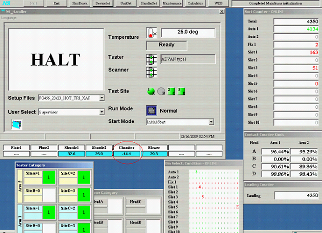
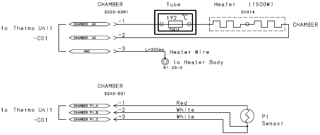
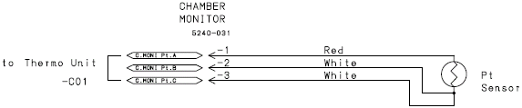

Service History
Subject: NS-7080W MMI temperature display negative value
Handler Model: NS-7080W (S/N: 121298)
Controller: RC520
Date: 18 Dec 2009
Symptom
Xilinx have an issue on the temperature for NS-7080, the temperature display for chamber main MMI windows was display in negative value (-14.1 degree celsius).

Action
Chamber connector resit temperature back to normal.
Cause
Loose connection for pt sensor(thermo sensor) connector of chamber.
Remarks
Loose connection of pt sensor's connector can also cause temperature reading in MMI display as 500 DegC.
21 Dec 2009 email from Hidaka:
In this case: PT sensor may have short condition.
We recommend to replacing the PT sensor.
Note: Temperature display indicate abnormal high, 500 degree celsius.
=> Removed connector or Sensor is broken (Open condition)
Temperature display indicate abnormal low
=> PT sensor short condition
It has 3 cables and temperature check is resistance between 2 white cables.
(Please see attached file. There are 2 of white lines. On the PT sensor cables)

